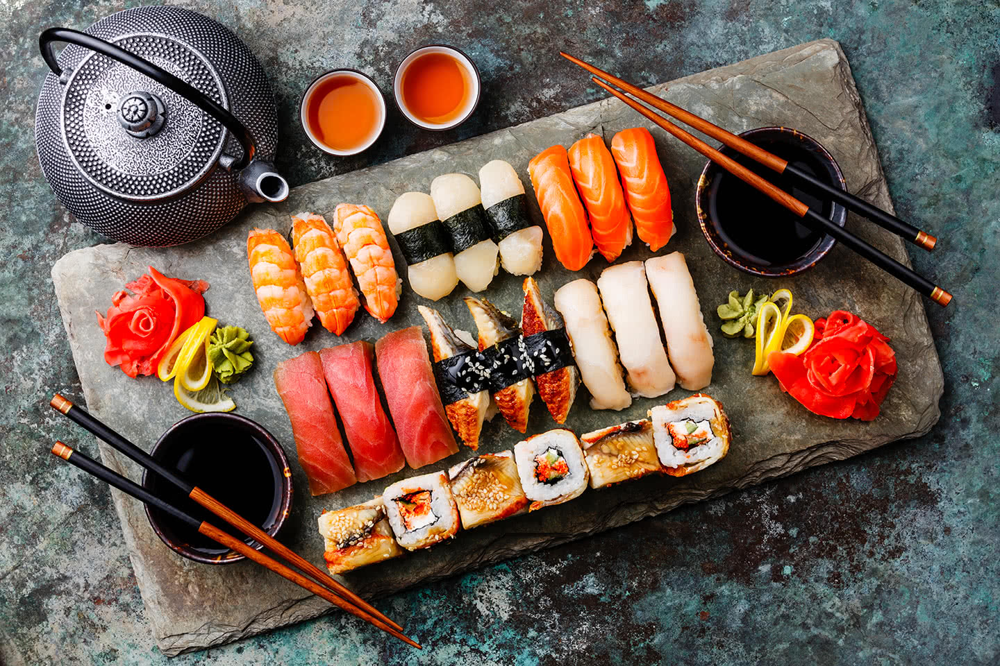

Zapoznaj się z kuchniami na całym świecie

Historia
Historia kuchni japońskiej związana jest z położeniem geograficznym - Japonia jest wyspą, z każdej strony otoczoną morzem, z kolei większość tego kraju jestpołożona na terenie górzystym. Dlatego kuchnia japońska obfituje w ryby, owoce morza oraz produkty leśne. Japonia słynie także z ryżu - jego produkcji i
konsumpcji, a pierwsze pola ryżowe pojawiły się w Japonii ok. 5 w. p.n.e. W Japonii od wieków rozwijał się buddyzm, co zdecydowanie wpłynęło na dietę
Japończyków - buddyzm przez długi czas zakazywał spożywania mięsa ssaków, dlatego w tradycyjnej kuchni japońskiej jest bardzo mało potraw mięsnych.
Wyjątkiem jest mięso ptactwa, np. kaczki.
Najpopularniejsze potrawy w Japoni
W kuchni japońskiej używa się najczęściej składników takich jak: ryż, tofu, grzyby shitake czy soja.Popularne jest także użycie w kuchni owoców japońskich,np. yuzu, persimmon i gruszka Nashi. Kolejnym ważnym składnikiem są glony, np. wakame, powszechnie używane. Co ciekawe, kuchnia japońska
nie wykorzystuje wielu przypraw, ale używa za to wiele sosów, którymi przyprawia się potrawy, takich jak: sos sojowy. Sushi - tradycyjnie jest to gotowany ryż
zaprawiony octem ryżowym (a czasami także solą i cukrem) nazywany w Japonii sushi meshi, zwykle podawany z surowymi dodatkami np. kawałkiem surowej
ryby, owocami morza, glonami, warzywami lub japońskim omletem zwanym tamagoyaki. Kawałki sushi podaje się zwykle z sosem sojowym i startym korzeniem
wasabi (japońskim chrzanem) i marynowanym imbirem. Najpopularniejsze formy sushi to: nigiri (kulka sushi i dodatek na wierzchu - najczęściej surowa ryba
lub owoc morza), futomaki (okrągłę rolki najczęściej zawijane w nori, zwykle składają się z kilku składników), hosomaki czy uramaki. Ramen - to bulion mięsny,
rybny lub warzywny, podawany z makaronem oraz dodatkami. Istnieje nawet kilkadziesiąt wersji tego dania. W Japonii ramen jest traktowany jak fast food i
można go zjeść w wielu miejscach. Najpopularniejsze rameny to shoyu (bulion na bazie sosu sojowego), shio (klarowny bulion),miso (bulion na bazie pasty z
fermentowanej soi) i tonkotsu (bulion wieprzowy). Makaron Udon - jest to gruby i sprężysty makaron pszenny.Zwykle podawany z bulionem i dodatkami.
Makaron Soba - jest to cienki makaron gryczany (czasami pszenno-gryczany), ponieważ w języku japońskim słowo soba oznacza grykę